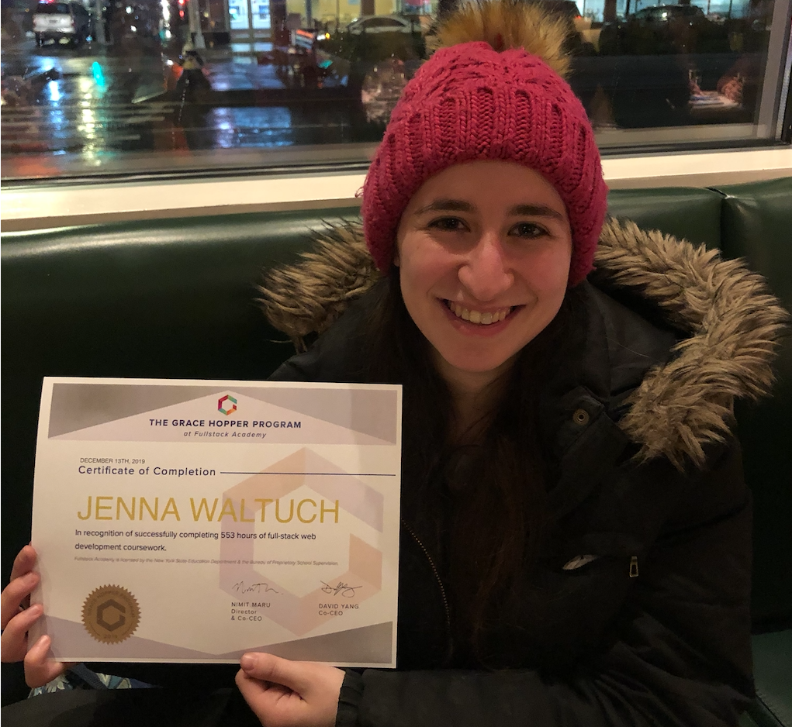
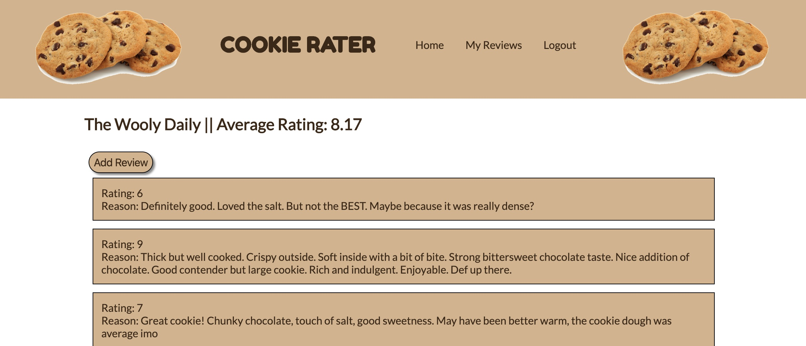
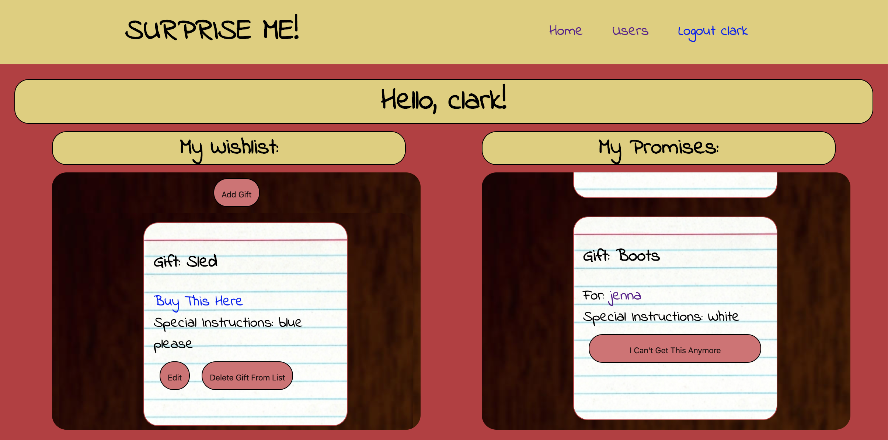

Hi, I'm Jenna and I like to code.
About Me

I studied both theatre and computer science in college. After
pursuing theatre for a while, developing leadership and
communication skills, I couldn’t turn away from my passion for
coding. I rediscovered my love of it through self-study, then
attended the Grace Hopper program to refine my skills. I love
puzzling problems, building apps, and writing code. In my ideal
role, I will have room to grow and plenty of learning
opportunities. My goal is to use my technical abilities to make a
positive impact.
When I'm not coding, I'm trying to find the tastiest desserts and
New York City's best chocolate chip cookie. Ask me for
recommendations. Be forewarned: I can talk about food and dessert at length.
Projects
Corona Tracker
CoronaTracker is an easy-to-use and accessible progressive web
application that helps you monitor your wellness and stay informed
during the COVID-19 crisis, designed by an open-source community
invested in public health.
For this app, I contributed by building many front-end features with React and Material UI, such as the crucial feature allowing users the option to delete their sensitive medical data. I also wrote tests for the Redux actions responsible for handling that data.
Stack: React (with Hooks), Redux, Material UI, HTML/CSS,
Javascript, Blockstack/Gaia

Cookie Rater
A webapp for cookie fans meant to coordinate cookie crawls in the
city and let users rate and review the different bakeries.
For this app, I focused on a mobile-compatible design. I also
implemented authentication routes, creating different permissions
for different user types.
Stack: Sequelize, Express, React, Redux, HTML, CSS, and Travis
Mindfull
A webapp that promotes mindfulness while eating, inspired by the
desire to help others combat over-snacking during self-quarantine.
For this app, which is meant to be soothing in times of stress, I
focused on designing a beautiful user interface and keeping
navigation logic simple.
Stack: HTML, CSS, and Javascript.

Surprise Me!
Surprise Me! is the best way to surprise your friends and family
with gifts they actually want. You can share your wishlist with
others and they can all pick out gifts for you with no overlap,
but you'll never know what you're going to get.
To enable the crucial functionality of this app - the prevention
of gift overlap - I leveraged sockets and Firebase Realtime
Database, so the webapp would update with the database in real
time. I also utilized a NoSQL database.
Stack: Firebase, Express, React, Redux, HTML, and CSS. CI/CD
managed with Travis.
AdventurAR
This mobile game app lets players go on a scavenger hunts,
determining where to go by answering riddles. Users can either see
where they stand on a map or see the AR view through their camera
lens, where treasure chests pop up before their eyes!
I led backend operations for this app, as well as made significant
frontend contributions such as implementing mobile stack
navigation.
Stack: Viro, React Native, Redux, Express and Sequelize.

Breakfaster
A mock e-commerce app that lets users order breakfast foods on
demand!
I played a pivotal role in modeling the backend data and designing
the Express routes that queried the database. I also wrote many of
our frontend tests.
Stack: Sequelize, Express, React, Redux, HTML, CSS, Passport,
CI/CD with Travis.
Experience
Get In Touch